TASLAK SEÇENEK01
Espresso
—Örnek seçenek · İçerik ve fiyat henüz kesinleşmedi.
THE GROUT / DİJİTAL MENÜ
Kahvenize eşlik eden tatlar,
sofrada uzayan sohbetler.
SEÇ, KEŞFET, KEYFİNİ ÇIKAR
TASLAK SEÇENEK01
Örnek seçenek · İçerik ve fiyat henüz kesinleşmedi.
TASLAK SEÇENEK02
Örnek seçenek · İçerik ve fiyat henüz kesinleşmedi.
TASLAK SEÇENEK03
Örnek seçenek · İçerik ve fiyat henüz kesinleşmedi.
TASLAK SEÇENEK04
Örnek seçenek · İçerik ve fiyat henüz kesinleşmedi.
TASLAK SEÇENEK05
Örnek seçenek · İçerik ve fiyat henüz kesinleşmedi.
TASLAK SEÇENEK06
Örnek seçenek · İçerik ve fiyat henüz kesinleşmedi.
TASLAK SEÇENEK07
Örnek seçenek · İçerik ve fiyat henüz kesinleşmedi.
TASLAK SEÇENEK08
Örnek seçenek · İçerik ve fiyat henüz kesinleşmedi.
TASLAK SEÇENEK09
Örnek seçenek · İçerik ve fiyat henüz kesinleşmedi.
SEÇ, KEŞFET, KEYFİNİ ÇIKAR
TASLAK SEÇENEK01
Örnek seçenek · İçerik ve fiyat henüz kesinleşmedi.
TASLAK SEÇENEK02
Örnek seçenek · İçerik ve fiyat henüz kesinleşmedi.
TASLAK SEÇENEK03
Örnek seçenek · İçerik ve fiyat henüz kesinleşmedi.
TASLAK SEÇENEK04
Örnek seçenek · İçerik ve fiyat henüz kesinleşmedi.
SEÇ, KEŞFET, KEYFİNİ ÇIKAR
TASLAK SEÇENEK01
Taslak seçenek · İçerik ve fiyat henüz kesinleşmedi.
TASLAK SEÇENEK02
Taslak seçenek · İçerik ve fiyat henüz kesinleşmedi.
TASLAK SEÇENEK03
Taslak seçenek · İçerik ve fiyat henüz kesinleşmedi.
TASLAK SEÇENEK04
Taslak seçenek · İçerik ve fiyat henüz kesinleşmedi.
TASLAK SEÇENEK05
Taslak seçenek · İçerik ve fiyat henüz kesinleşmedi.
TASLAK SEÇENEK06
Taslak seçenek · İçerik ve fiyat henüz kesinleşmedi.
TASLAK SEÇENEK07
Taslak seçenek · İçerik ve fiyat henüz kesinleşmedi.
SEÇ, KEŞFET, KEYFİNİ ÇIKAR
Tatlılar %100 Belçika çikolatasıyla servis edilir.
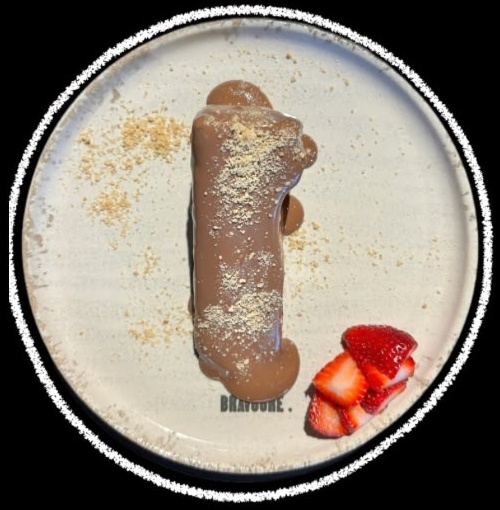
Tatlılar01
Üzerinde Belçika çikolatasıyla servis ettiğimiz yumuşak dokulu San Sebastian
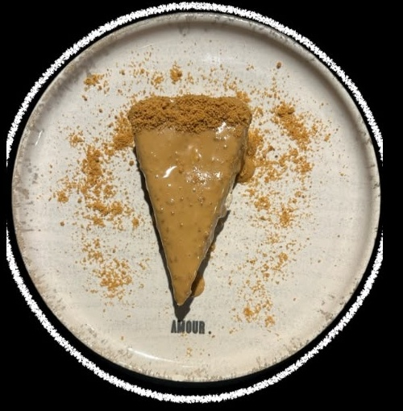
Tatlılar02
Üzerinde erimiş lotus kremasıyla servis edilir.
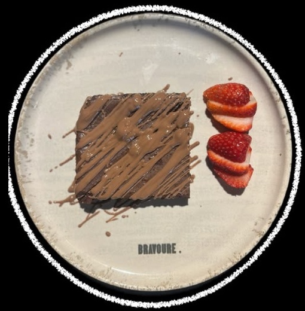
Tatlılar03
Yoğun çikolatalı klasik Brownie üzeri Belçika çikolatası (Sıcak servis edilir.)
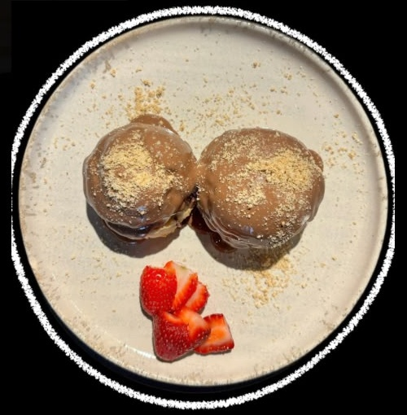
Tatlılar04
2 adet içi pastacı krema dolgulu çıtır toplar. Belçika çikolatasıyla servis edilir.
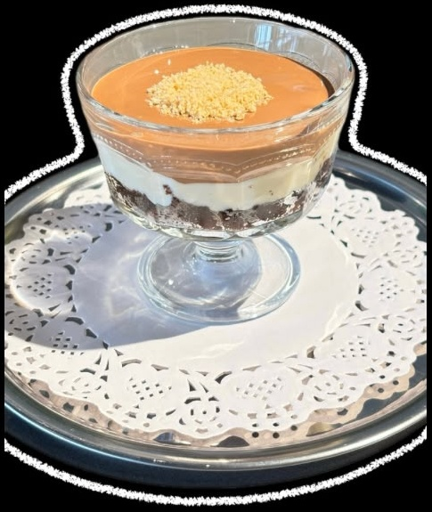
Tatlılar05
Altı ıslak kek, ortası pastacı kreması, üzeri Belçika çikolatası.
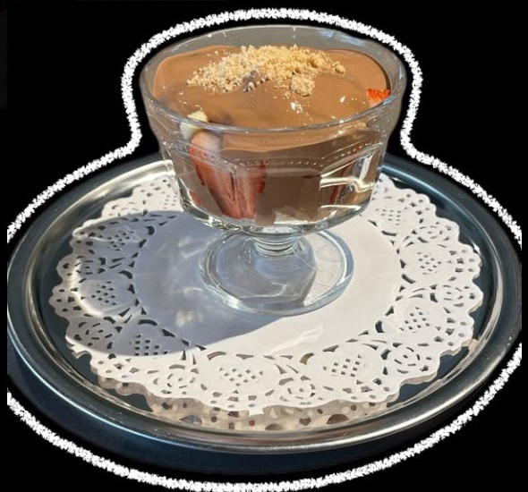
Tatlılar06
Çilek, muz ve Belçika çikolatası
Tatlılar07
Espressoyla ıslatılmış kedi dili bisküvi, özel tiramisu kreması ve kakao
Tatlılar08
İsteğe göre çilekli ya da muzlu, özel kreması ve çıtır milföy katlarıyla Napolyon tatlısı.
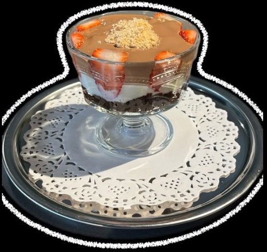
Tatlılar09
Altı ıslak kek, ortası çilek ve pastacı kreması, üzeri Belçika çikolatası.
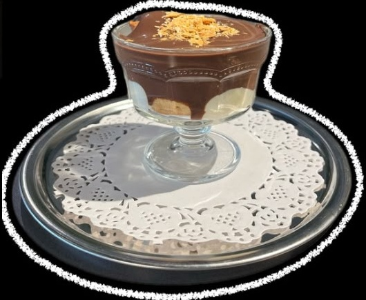
Tatlılar10
3 adet içi krema dolgulu profetirol top ve özel profiterol sosu
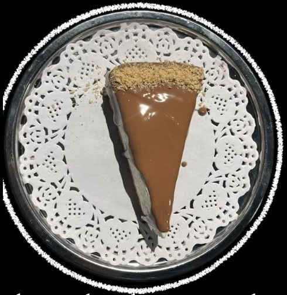
Tatlılar11
Sade cheesecake üzerine Belçika çikolatasıyla servis edilir.
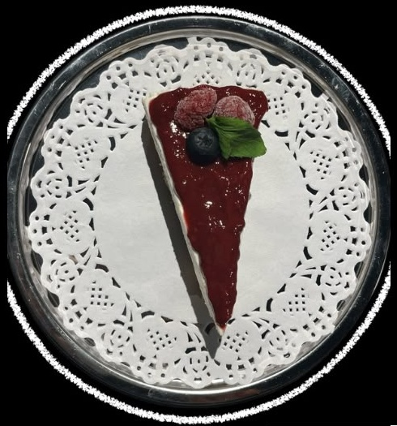
Tatlılar12
İsteğe göre çilekli ya da muzlu magnolia
Kaynak menüdeki açıklama bu şekilde; ürün açıklaması teyit bekliyor.
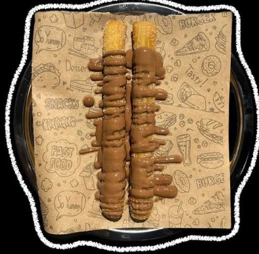
Tatlılar13
Porsiyonda 2 adet bulunmaktadır. Klasik churros şeklinde yanında çikolatayla servis edilir.
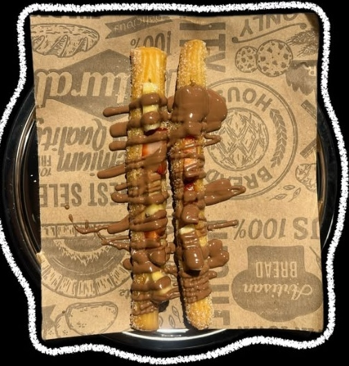
Tatlılar14
Ortasında çilek ve muz bulunan 2 adet churros çubuğu. Üzerinde çikolatayla servis edilir.
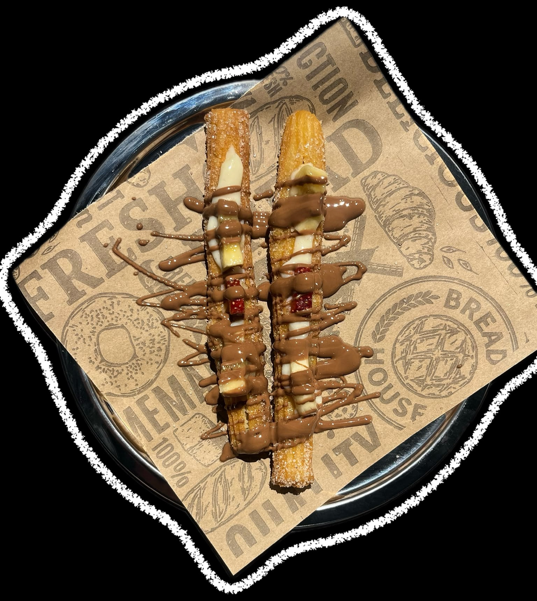
Tatlılar15
İçinde krema dolgusu, çilek ve muz bulunan 2 adet churros çubuğu. Üzerinde çikolatayla servis edilir.
SEÇ, KEŞFET, KEYFİNİ ÇIKAR
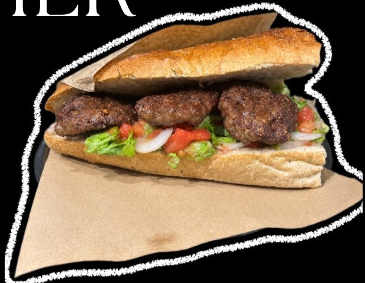
Yemekler01
Yarım ekmek içerisinde 120 gram köfte ve özel sosumuzla harmanladığımız marul, domates ve soğan salatası
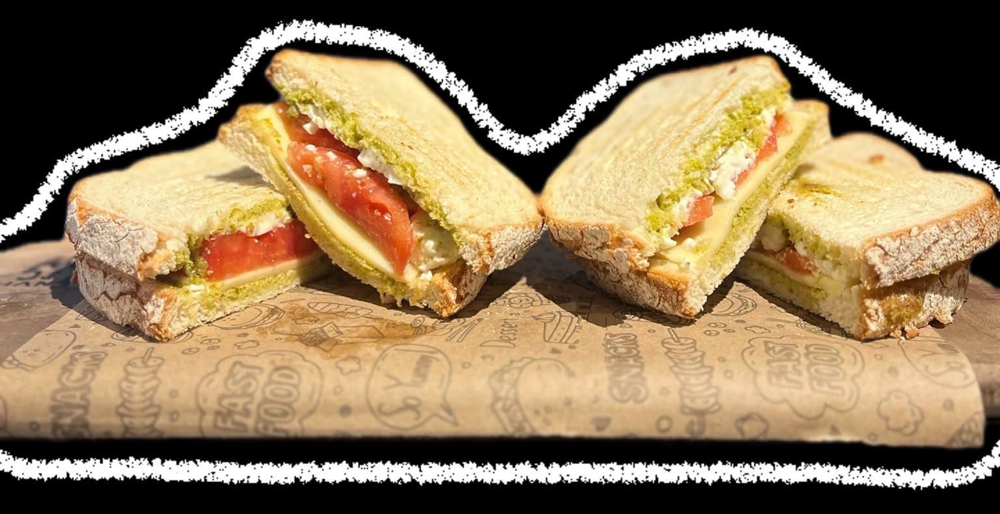
Yemekler02
Pesto sos, kaşar, beyaz peynir ve domates
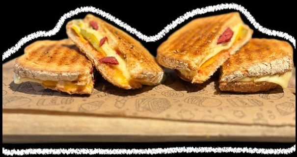
Yemekler03
Sucuk, çift kaşar, salatalık turşusu, ketçap, mayonez, tereyağ ve özel baharat
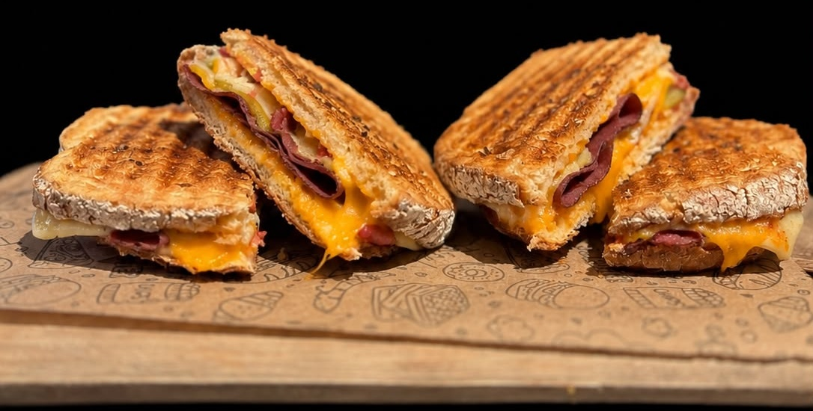
Yemekler04
Sucuk, kırmızı kuru et, çift kaşar, cheddar, salatalık turşusu, ketçap, mayonez, tereyağ ve özel baharat
Yemekler05
Patates kızartması, 4 adet soğan halkası, 2 adet nugget ve 2 adet peynir çubuğu